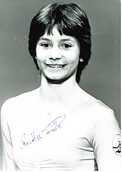

Britta Fulle (GDR)

Britta's parents were both world-class gymnasts. Her father, Siegfried, was a multiple GDR national champion who competed in 3 Olympic Games. Her mother, Ursula Trensinger, competed at the 1966 world championships.
Competition Results
1983
GDR Children's and Youth Spartakiade: 1st AA
Jr. GDR-CSSR Dual Meet: 1st Team, 11th AA
1984
Cottbus International: 5th AA
Jr. European Championships: 14th AA, 7th B
Jr. GDR-USSR Dual Meet: 2nd Team, 3rd AA
This page was created on November
06, 2005 and was last updated on November 13, 2011.
© Gymn Forum